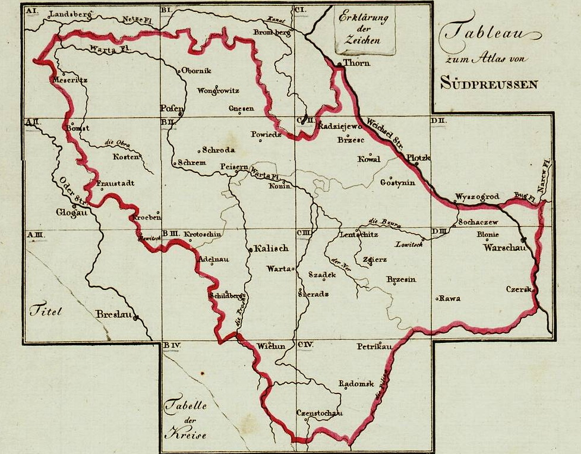

Special Karte von Suedpreussen mit allerhoechster Erlaubniss aus der Koniglichen grossen topographischen Vermessungs-Karte, unter Mitwurkung des Directors Langner, reducirt und herausgegeben vom Geheimen Ober-Bau-Rath Gilly... die Post-Course und Hauptstrassen sind gezeichnet vom ersten General Post Amst
This is a special map of South Prussia prepared under royal decree by renowned architect and civil engineer, David Gilly after the final Partition of Poland. The map was created in 13 sections. Each section has a sort of grid inlaid in it which makes for small gaps between sections. A close look at these suggests that it was prepared over some sort of cheesecloth backing so that it could be folded for easier carrying without damaging the paper sections. The German description above indicates it was used to facilitate mail delivery.
This map includes much of the heavily German populated regions of our study area, Russia Poland. Large regions to the NE, E, and SE are not included.
Click on the grid below to download each of the 13 sections.
An index of over 18,000 place names has been created for these maps. It includes all the named places shown down to the smallest inn and mill. Also included are place names shown outside the boundaries of South Prussia.
Note: We are accustomed to modern maps drawn with North being the top of the page. This map is skewed for some reason. True North is actually approximately in a line drawn to the NNE. If you look at Grid CII below, The city of Plotzk would actually be NE of Gostynin, not ENE as shown. Although the map detail is for the region inside the red border, villages outside of it are also included.

Adjectives: In order to facilitate alphabetical indexing, adjectives are shown at the end of the base place name. So Gross (large) Kempa on the map will be in the index as Kempa Gross. EXCEPTION: Place names beginning with Wola. . . This adjective is either applied as a separate word as a part of the full name so it has been kept at the beginning of all place names.
Diacritics: The map uses umlauts but no special Polish characters. Umlaut characters are alphabetized in the same order as the base letter. So Grünberg will follow directly after Grunau.
Spelling: Spelling is presented as shown on the map. This may differ from other maps or from modern usage. In most cases, a Polish name with a diacritic letter will be rendered by the sound rather than the letter. Dabie (with a hook under the 'a' will be Dombie or Dembie on the map. In some cases it is very difficult to discern on the map the difference between some letter arrangements such as 'ice' vs. 'iec'. Be flexible in how these are interpreted.
Abbreviations / Translations:
| M = Mühle / Mill | Kr. = Krug / inn or tavern | Neu = New | Alt = Old |
| Gross = Large | Klein = Small | Ober = Upper | Mittel = Middle |
| Nieder = Lower | Pol. = Polish | Deutsch = German | Kol. = Kolonie = Colony |
| Vw. = Volwark / Folwark = farm | |||
| Hol. = Hollendry (This term describes a form of democratic village government, similar to Germanic City Law. Though introduced by Dutch immigrants in the 1500s, it does not mean that Dutch settled every village with that term in the name.) | |||
| Königlich = town established under royal decree | Adlischer = town established by nobility | ||